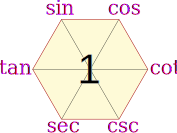
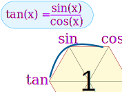
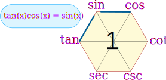
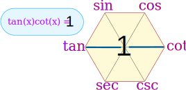
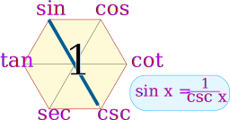
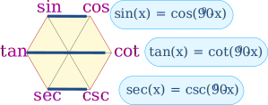
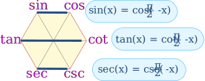
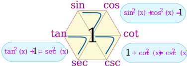
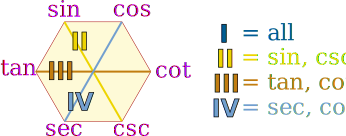
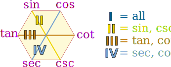

Magic Hexagon for Trig Identities
| This hexagon is a special diagram to help you remember some Trigonometric Identities |
 |
Sketch the diagram when you are struggling with trig identities ... it may help you! Here is how:
Building It: The Quotient Identities
|
Start with: tan(x) = sin(x) / cos(x)
|
 | |||
|
Then add:
|
||||
| To help you remember: the "co" functions are all on the right | ||||
OK, we have now built our hexagon, what do we get out of it?
Well, we can now follow "around the clock" (either direction) to get all the "Quotient Identities":
| Clockwise |
|
| Counterclockwise |
|
Product Identities
The hexagon also shows that a function between any two functions is equal to them multiplied together (if they are opposite each other, then the "1" is between them):
|  |  | |
| Example: tan(x)cos(x) = sin(x) |
Example: tan(x)cot(x) = 1 |
Some more examples:
- sin(x)csc(x) = 1
- tan(x)csc(x) = sec(x)
- sin(x)sec(x) = tan(x)
But Wait, There is More!
You can also get the "Reciprocal Identities", by going "through the 1"
|  | Here you can see that sin(x) = 1 / csc(x) |
Here is the full set:
- sin(x) = 1 / csc(x)
- cos(x) = 1 / sec(x)
- cot(x) = 1 / tan(x)
- csc(x) = 1 / sin(x)
- sec(x) = 1 / cos(x)
- tan(x) = 1 / cot(x)
Bonus!
AND we also get these co-function identities:

Examples:
- sin(30°) = cos(60°)
- tan(80°) = cot(10°)
- sec(40°) = csc(50°)
Or, if you prefer, in radians:

Examples:
- sin(0.1π) = cos(0.4π)
- tan(π/4) = cot(π/4)
- sec(π/3) = csc(π/6)
Double Bonus: The Pythagorean Identities
The Unit Circle shows us that
sin2 x + cos2 x = 1
The magic hexagon can help us remember that, too, by going clockwise around any of these three triangles:

And we have:
- sin2(x) + cos2(x) = 1
- 1 + cot2(x) = csc2(x)
- tan2(x) + 1 = sec2(x)
You can also travel counterclockwise around a triangle, for example:
- 1 − cos2(x) = sin2(x)
Triple Bonus: Quadrants Positive
It can also help us remember which quadrants each function is positive in.
 

I hope this helps you!